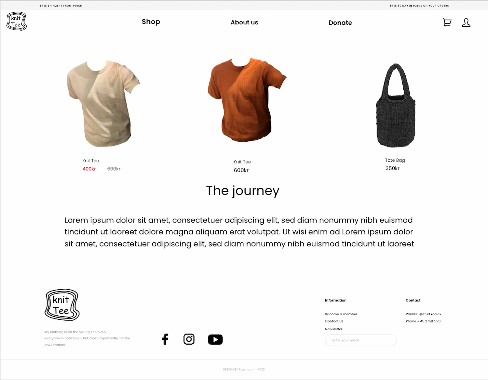
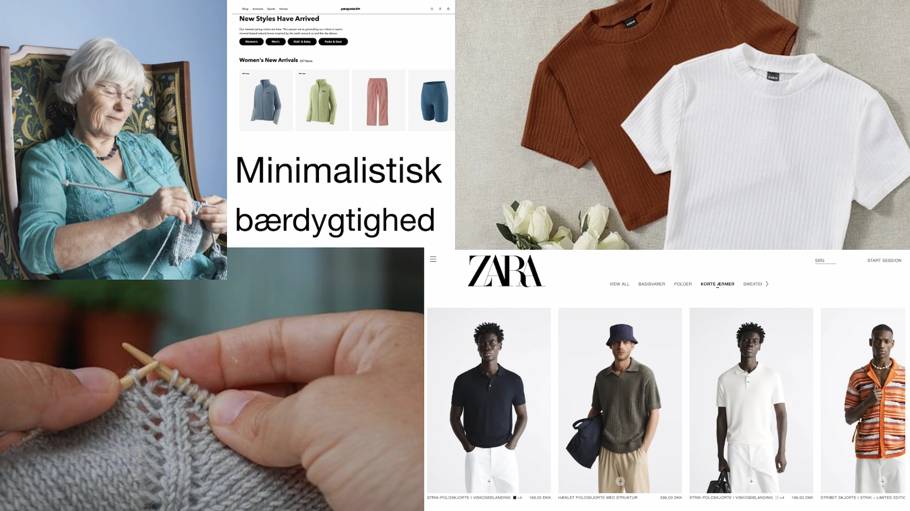

UX research

I dette tema lærte jeg at bruge UX – research til at indsamle og analysere på data.
Jeg lærte hvordan man bruger
research til at skabe en bedre brugeroverflade.
Opgaven gik ud på, at jeg skulle lave en T-shirt som en prototype hjemmeside. Jeg
valgte at lave en bæredygtigt Knit-Tee
som skulle strikkes i hånden og laves i eget land for at skære ned på udenlandsk produktion. Jeg gik
i gang med at finde
min målgruppe og lavede en USP inden for det emne, jeg havde valgt, nemlig ”bæredygtighed”. Jeg gik
derefter i gang med
at lave desktop research, survey, observation, og et interview inden for mit emne, hvorefter jeg
samlede indsigter og
data for at kunne specificere mit koncept.
Jeg lavede sketches og crazy8s i klassen, hvor vi efterfølgende testede, hvad der fungerede, og hvad
der ikke fungerede.
Jeg fortsatte med at udarbejde min prototype og inddrive microcopy i prototypen. Jeg lavede også et
five act interview
for at finde ud af hvad der manglede og fungerede godt på min prototype.Jeg lavede en pitch af min
prototype foran nogle af mine klassekammerater og en lærer, hvor jeg fortalte om al den
research, jeg havde lavet samt om mit emne, og jeg fik god konstruktiv feedback; både om hvad der
var godt og mindre
godt.
Jeg lærte i dette tema og bruge UX – research til at skabe en bedre forståelse for et
koncept, samt det at komme lidt
dybere ned i det emne man arbejder med, ved at bruge metoder og tekniker så som interview, survey og
research. Jeg lærte
at indsamle viden og data til at skabe et bedre produkt.
Skitse

Survey

Survey

Prototype

Prototype
Moodboard
